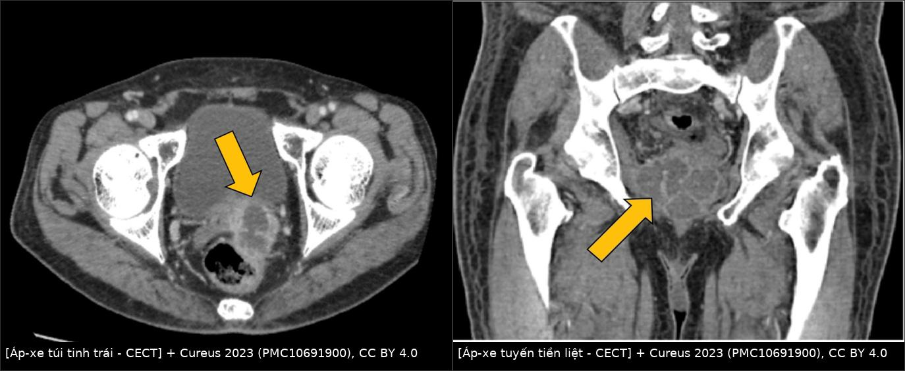
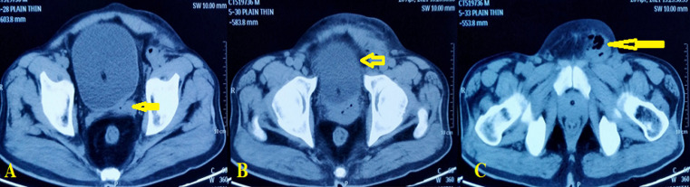
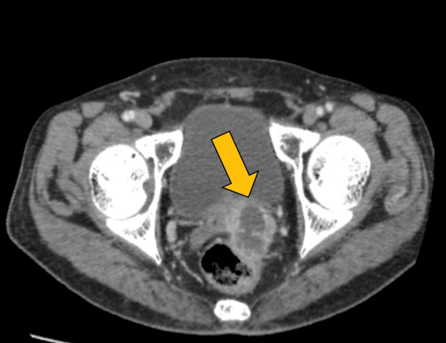

3077 — Áp-xe túi tinh: ổ mủ sau bàng quang, khi nào chỉ kháng sinh và khi nào phải dẫn lưu
Tags: pattern:ap-xe pattern:tu-dich-thuy-dich pattern:day-thanh pattern:ngam-thuoc-vien pattern:han-che-khuech-tan vung:tiet-nieu vung:tieu-khung vung:sinh-duc protocol:CT-bung-chau protocol:MRI-tieu-khung protocol:TRUS protocol:dan-luu score:qSOFA
Mức chắc chắn (certainty): tổng hợp y văn (literature synthesis) — ghép review 20 ca (Pandey, trích trong Pan Afr Med J 2023, PMC10066645), ca hình ảnh CT (Cureus 2023, PMC10691900), ca áp-xe túi tinh + áp-xe tuyến tiền liệt có MRI (J Med Case Rep 2024, PMC11549752), ca biến chứng viêm phúc mạc (World J Clin Cases 2023, PMC9923855), ca dẫn lưu qua đáy chậu (Res Rep Urol 2024, PMC11624677), loạt 42 ca bệnh túi tinh trên MRI (Int Braz J Urol 2018, PMC5815537) và review Zinner (Diagnostics 2026, PMC13115000). Không có ca do nhóm tự chụp.
Câu hỏi thực hành: nam 60 tuổi, đái tháo đường kiểm soát kém, sốt 38,5°C, đau vùng chậu–đáy chậu, CRP 182 mg/L, bạch cầu 13.250/mm³; CT thấy ổ dịch 28 × 27 mm vỏ dày ngấm thuốc ở túi tinh phải. Đây là nang túi tinh bẩm sinh hay áp-xe, và có phải dẫn lưu ngay không? Bài chốt ba quyết định: (1) ổ dịch túi tinh + sốt/CRP cao + vỏ dày ngấm thuốc → áp-xe cho đến khi chứng minh ngược; (2) kháng sinh đơn thuần chỉ đủ cho ổ nhỏ, không nhiễm trùng huyết — ổ ≥ 2 cm, sepsis hoặc không đáp ứng 48–72 giờ phải dẫn lưu; (3) kiểm tra thận cùng bên trước khi can thiệp — nang túi tinh + thận bất sản là Zinner, không phải áp-xe. Nối 3055 – Áp-xe tuyến tiền liệt, 158 – Tuyến tiền liệt & PI-RADS.
1. Tổng quan bệnh học – cơ chế hình ảnh: vì sao ổ mủ nằm sau bàng quang
- Giải phẫu: hai túi tinh nằm sau bàng quang, trên tuyến tiền liệt, đổ vào ống phóng tinh rồi vào niệu đạo sau; tuyến tiền liệt, ống dẫn tinh và túi tinh dùng chung đường ra và có hệ mạch – bạch mạch rất gần nhau → nhiễm trùng lan từ tuyến tiền liệt/niệu đạo là đường vào thường gặp nhất.
- Sinh lý bệnh: tắc ống phóng tinh (phì đại tuyến tiền liệt, sonde niệu đạo lưu lâu, thủ thuật niệu đạo, dị tật ống) → ứ dịch + vi khuẩn → viêm rồi tạo ổ mủ. Đái tháo đường, suy giảm miễn dịch, HIV, nghiện rượu làm tăng nguy cơ. E. coli là tác nhân hay gặp nhất; ngoài ra Klebsiella, Proteus, Citrobacter; lao ở vùng lưu hành.
- TẠI SAO ổ mủ có vỏ dày ngấm thuốc: phản ứng viêm tạo màng xơ – mạch máu tân sinh quanh ổ mủ; màng này ngấm thuốc cản quang ở thì muộn. Dịch bên trong là mủ (xác bạch cầu, protein, mảnh tổ chức) nên không ngấm thuốc, có thể có cặn lắng/bọt khí.
- TẠI SAO hạn chế khuếch tán: mủ đặc, nhiều tế bào và protein → chuyển động Brown của nước bị cản → DWI tăng tín hiệu, ADC giảm. Đây là dấu giúp phân biệt áp-xe (ADC thấp) với nang đơn thuần (ADC cao, dịch trong); nhưng không có ngưỡng ADC đồng thuận riêng cho túi tinh — phải đọc cùng hình thái và lâm sàng.
- Ngưỡng định lượng phải thuộc:
| Biến số | Số liệu | Nguồn |
|---|---|---|
| Số ca đã báo | < 100 ca từ 1978; 28 ca trong y văn tiếng Anh (2009); < 40 ca (2024) | PMC9923855; PMC2740224; PMC11624677 |
| Triệu chứng (review 20 ca) | Sốt 74%, đái khó 58%, tuyến tiền liệt/mào tinh dễ đau 32% | PMC10066645 (trích Pandey) |
| Kích thước ổ trong các ca | 28 × 27 mm; 38 × 13 mm; 40 × 24 mm; ổ áp-xe tuyến + túi tinh 70 × 60 × 43 mm | PMC12143768; PMC11624677; PMID 42587330; PMC11549752 |
| Lượng mủ dẫn lưu | 8 mL (đáy chậu); > 100 mL (qua bẹn) | PMC11624677; PMC2740224 |
| CRP / bạch cầu lúc vào | 182 mg/L / 13.250/mm³; 258 mg/L kèm qSOFA 3/3 | PMC12143768; PMC11549752 |
2. Mẫu hình + chẩn đoán phân biệt theo đường lan và bối cảnh (gamut)
- Gamut theo đường lan:
- Từ tuyến tiền liệt (hay nhất): áp-xe tuyến tiền liệt lan trực tiếp → túi tinh; có thể áp-xe túi tinh đơn thuần hoặc đồng thời.
- Từ niệu đạo/bàng quang: sonde lưu lâu, thủ thuật nội soi, viêm niệu đạo; tắc ống phóng tinh do phì đại tuyến tiền liệt.
- Theo đường sinh dục: viêm mào tinh – ống dẫn tinh lan ngược; sau triệt sản/thủ thuật bẹn.
- Ít gặp: lao niệu – sinh dục (tiểu máu, vôi hóa, "đái mủ vô khuẩn"), nhiễm nấm ở người suy giảm miễn dịch.
- Gamut theo hình ảnh — "ổ dịch túi tinh": áp-xe · nang bẩm sinh/Zinner · nang ống phóng tinh · nang Müllerian/Wolffian · u túi tinh (thể đặc) · áp-xe tuyến tiền liệt lan · viêm túi tinh (dày thành, không ổ dịch) · xuất huyết túi tinh (T1 tăng).
- Mẹo nhớ 3 câu hỏi: (1) có sốt/CRP cao không? (2) vỏ dày ngấm thuốc hay thành mỏng? (3) thận cùng bên có tồn tại không?
3. Bảng so sánh phân biệt (ma trận đối chiếu)
| Thực thể (entity) | Hình ảnh điển hình (US/CT/MRI) | Chốt vào (rule-in) | Chốt loại (rule-out) | Gợi ý xác nhận |
|---|---|---|---|---|
| Áp-xe túi tinh | Ổ dịch vỏ dày ngấm thuốc viền, cặn/bọt khí, DWI cao – ADC thấp, T2 hỗn hợp cao | Sốt + CRP cao + vỏ dày ngấm thuốc + cặn trong ổ | Thành mỏng, không ngấm thuốc, không triệu chứng → nang | Siêu âm/CT/MRI; chọc hút có mủ là chốt |
| Nang túi tinh bẩm sinh / Zinner | Nang thành mỏng, dịch trong, không ngấm thuốc, thường một bên; kèm thận cùng bên bất sản | Thận bất sản cùng bên + nang túi tinh + không viêm | Vỏ dày, sốt, CRP cao → áp-xe | CT/MRI hệ niệu; siêu âm thận |
| Nang ống phóng tinh / Müllerian | Nang đường giữa, thành mỏng, dịch trong, không ngấm thuốc | Vị trí đường giữa + thành mỏng + không viêm | Lệch một bên + vỏ dày → áp-xe | MRI T2; không can thiệp nếu không triệu chứng |
| Áp-xe tuyến tiền liệt lan túi tinh | Ổ dịch trong tuyến tiền liệt lan ra sau, đa thùy; túi tinh dày/ứ dịch | Ổ chính ở tuyến + lan túi tinh | Ổ chính ở túi tinh, tuyến bình thường → áp-xe túi tinh | MRI/CT; dẫn lưu ổ tuyến có thể làm xẹp ổ túi tinh |
| U túi tinh | Thành phần đặc ngấm thuốc, có thể vôi hóa; không phải ổ dịch đơn thuần | Phần đặc ngấm thuốc + không mủ | Ổ dịch hoàn toàn, không phần đặc → loại | MRI + sinh thiết nếu nghi |
| Viêm túi tinh | Dày thành lan tỏa (≈ 3 mm), ngấm thuốc viền, không có ổ dịch | Dày thành + không ổ dịch + đáp ứng kháng sinh | Có ổ dịch có vỏ → áp-xe | MRI; theo dõi sau kháng sinh |
| Xuất huyết túi tinh | T1 tăng tín hiệu, T2 hỗn hợp; không vỏ dày | T1 cao + không sốt | T1 thấp + vỏ dày → áp-xe | MRI không tiêm + có/không tiêm |

Cureus 2023 (PMC10691900), CC BY 4.0: trái — ổ dịch giảm đậm độ, vỏ dày ngấm thuốc ở túi tinh trái (mũi tên vàng); phải — ổ dịch đa thùy trong tuyến tiền liệt (mũi tên vàng). Hai ổ có thể cùng tồn tại; vị trí ổ chính quyết định đường dẫn lưu. Ảnh ghép letterbox, giữ nguyên panel và mũi tên của tác giả.
Pan Afr Med J 2023 (PMC10066645), CC BY 4.0: (A) ổ dịch ở túi tinh trái (mũi tên vàng); (B) viêm/tổn thương bàng quang phía trên (mũi tên vàng); (C) ổ mủ lan ra vùng bẹn (mũi tên vàng). Đây là biến thể "áp-xe túi tinh biểu hiện như khối bẹn" — dễ bị chẩn đoán nhầm thoát vị/áp-xe mô mềm.4. Protocol chụp + ngưỡng xử trí
- Xét nghiệm trước hình ảnh: tổng phân tích tế bào máu, CRP, cấy máu + cấy nước tiểu, glucose/HbA1c; PSA có thể tăng nhẹ (ca 44 tuổi: 3,71 µg/L so với nền 0,90 µg/L) — không dùng PSA để chẩn đoán áp-xe.
- Chẩn đoán hình ảnh theo bậc:
- Siêu âm qua ngả trực tràng (TRUS): đầu tay, thấy ổ giảm âm, vỏ dày, vách, cặn; có thể hướng dẫn chọc hút/dẫn lưu.
- CT bụng – chậu có cản quang: đánh giá lan ra ngoài (bẹn, đáy chậu, phúc mạc), khí trong ổ, áp-xe tuyến tiền liệt/thận kèm; cần cho qSOFA/sepsis.
- MRI tiểu khung (T1, T2, DWI/ADC, sau gadolinium): khi ổ phức tạp, cần phân biệt nang – áp-xe – u, hoặc lập kế hoạch mổ. Dấu chốt: DWI cao/ADC thấp + vỏ ngấm thuốc viền; dịch T1 thấp, T2 cao không đồng nhất.
- Không cần niệu đồ tĩnh mạch/CT niệu đồ thường quy nếu không có tiểu máu hoặc nghi tổn thương đường niệu trên.
- Ngưỡng và lựa chọn dẫn lưu: không có ngưỡng kích thước đồng thuận trong y văn (chủ yếu ca lâm sàng). Thực hành hợp lý:
- Ổ nhỏ, không sepsis, đáp ứng kháng sinh sau 48–72 giờ: có thể chỉ kháng sinh (ca 58 tuổi HIV/đái tháo đường: áp-xe túi tinh được điều trị bảo tồn, chỉ dẫn lưu ổ bẹn).
- Ổ ≥ 2 cm, sepsis/qSOFA ≥ 2, đau nhiều, không đáp ứng 48–72 giờ, hoặc lan ra bẹn/đáy chậu/phúc mạc: dẫn lưu + kháng sinh.
- Đường dẫn lưu: qua đáy chậu dưới gây tê tại chỗ (ca 44 tuổi, 8 mL mủ, xuất viện ngày 1); qua trực tràng dưới hướng dẫn TRUS; qua niệu đạo/vesiculoscopy (kèm HoLEP nếu có tắc cổ bàng quang); nội soi ổ bụng/mổ mở khi ổ lớn, lan phúc mạc hoặc thất bại đường khác.
- Kháng sinh: phổ gram âm (ceftriaxone/piperacillin–tazobactam) ± metronidazole nếu kỵ khí; điều chỉnh theo cấy, thời gian 2–4 tuần tùy đáp ứng (ca dùng 14 ngày uống sau IV; ca khác 3 tuần).
flowchart TD
A[Nam sốt + đau vùng chậu/đáy chậu + LUTS] --> B[Siêu âm TRUS hoặc CT bụng-chậu]
B --> C{Ổ dịch ở túi tinh?}
C -->|Không| D[Viêm túi tinh/áp-xe tuyến: kháng sinh, tìm ổ khác]
C -->|Có| E{Vỏ dày ngấm thuốc + sốt/CRP cao?}
E -->|Không| F[Nang bẩm sinh/Zinner: kiểm tra thận, không dẫn lưu]
E -->|Có| G[Áp-xe túi tinh: cấy máu/urine + kháng sinh]
G --> H{Sepsis, ổ ≥ 2 cm, lan rộng hoặc thất bại 48-72 giờ?}
H -->|Không| I[Kháng sinh, theo dõi 48-72 giờ + chụp lại]
H -->|Có| J[Dẫn lưu: đáy chậu/TRUS/niệu đạo hoặc nội soi]
J --> K[Cấy mủ + kháng sinh theo cấy 2-4 tuần]
K --> L[Chụp lại kiểm tra ổ tồn dư]
5. Biến thể bình thường và cạm bẫy
- Bẫy 1 — nang bẩm sinh bị gọi là áp-xe: nang thành mỏng, dịch trong, không ngấm thuốc, bệnh nhân không sốt; dẫn lưu vô ích và có thể gây nhiễm trùng. Luôn hỏi sốt/CRP và đo độ dày/thành ngấm thuốc.
- Bẫy 2 — bỏ sót Zinner: nang túi tinh một bên + thận cùng bên bất sản; nếu chỉ nhìn khung chậu sẽ bỏ qua. Trước khi can thiệp, siêu âm/CT hệ niệu để tìm thận bất sản/niệu quản lạc chỗ.
- Bẫy 3 — áp-xe tuyến tiền liệt "đội lốt" áp-xe túi tinh: ổ chính ở tuyến có thể lan ra túi tinh; dẫn lưu ổ tuyến đôi khi làm xẹp cả ổ túi tinh (ca 60 tuổi: dẫn lưu áp-xe tuyến qua TRUS + kháng sinh dài, ổ túi tinh thoái triển).
- Bẫy 4 — vỡ ổ vào phúc mạc: đau bụng lan tỏa, sốc nhiễm khuẩn; ca sonde lưu lâu đã tiến triển thành viêm phúc mạc toàn thể, MODS, sốc nhiễm khuẩn — phải dẫn lưu ổ đáy chậu + ổ bụng kịp thời.
- Bẫy 5 — lao túi tinh: bệnh cảnh mạn, vôi hóa, tiểu máu, "mủ vô khuẩn"; cấy/PCR lao trước khi kết luận áp-xe thông thường.
- Bẫy 6 — biến chứng sau can thiệp: teo túi tinh và rối loạn xuất tinh sau điều trị bảo tồn; thuyên tắc phổi đã được báo sau dẫn lưu nội soi ổ bụng — dự phòng huyết khối theo nguy cơ.
- Cạm bẫy mặt cắt: trên CT không cản quang, túi tinh giãn chứa dịch có thể trông giống bàng quang/ nang; dùng thì muộn + tái tạo vành/dọc và đối chiếu ống phóng tinh để xác định túi tinh.
6. Tự lượng giá — Blind Quiz
Ca 1 — 60 tuổi, đái tháo đường, sốt và đau vùng chậu.

- Gợi ý lâm sàng: HbA1c 11,8%, sốt 2 tuần, tiểu khó, CRP/bạch cầu tăng; siêu âm thấy ổ dịch trong túi tinh trái.
- Câu hỏi: Mô tả dấu hiệu chính? Ba chẩn đoán phân biệt? Có cần dẫn lưu ngay không?
Bấm để hiện đáp án
- Dấu hiệu (findings): ổ giảm đậm độ trong túi tinh trái, vỏ dày ngấm thuốc viền, có cặn bên trong (mũi tên vàng); không thấy phần đặc ngấm thuốc.
- Chẩn đoán (diagnosis): áp-xe túi tinh trái trên nền đái tháo đường kiểm soát kém.
- Phân biệt: nang túi tinh bẩm sinh/Zinner (thành mỏng, không sốt), áp-xe tuyến tiền liệt lan (ổ chính ở tuyến), u túi tinh (phần đặc ngấm thuốc).
- Điều trị: kháng sinh phổ gram âm + dẫn lưu nếu ổ ≥ 2 cm/sepsis/không đáp ứng; ca này được điều trị kháng sinh và theo dõi, nhưng nguyên tắc chung là dẫn lưu ổ mủ có triệu chứng.
- Nguồn ảnh: Cureus 2023 (PMC10691900), CC BY 4.0.
Ca 2 — 58 tuổi, HIV/đái tháo đường, khối bẹn đau.
- Gợi ý lâm sàng: khối bẹn trái đau 15 ngày, sốt; tiền sử HIV và đái tháo đường.
- Câu hỏi: (A)–(C) cho thấy đường lan nào? Vì sao không được chỉ mổ "áp-xe bẹn" mà bỏ qua ổ chính?
Bấm để hiện đáp án
- Dấu hiệu (findings): (A) ổ dịch ở túi tinh trái; (B) tổn thương/viêm bàng quang phía trên; (C) ổ mủ lan theo dây chằng bẹn ra vùng bẹn.
- Chẩn đoán (diagnosis): áp-xe túi tinh trái lan ra bẹn — ổ bẹn chỉ là ngọn, ổ chính ở túi tinh.
- Điều trị: dẫn lưu ổ bẹn + kháng sinh toàn thân; ổ túi tinh có thể điều trị bảo tồn nếu nhỏ và hết triệu chứng (ca này bảo tồn túi tinh). Nếu chỉ mổ ổ bẹn mà không điều trị ổ chính → tái phát/nhiễm khuẩn huyết.
- Nguồn ảnh: Pan Afr Med J 2023 (PMC10066645), CC BY 4.0.
Ca 3 — Nang túi tinh hay áp-xe? Cần kiểm tra gì trước khi can thiệp?

- Gợi ý lâm sàng: nam trẻ, đau vùng chậu tái diễn, không sốt; siêu âm thấy nang sau bàng quang.
- Câu hỏi: (B) cho thấy gì? Vì sao phải chụp hệ niệu trước khi chọc/dẫn lưu?
Bấm để hiện đáp án
- Dấu hiệu (findings): (B) axial T2 — nang túi tinh (mũi tên đỏ) cạnh niệu quản giãn/niệu quản lạc chỗ và ureterocele (mũi tên vàng/cam); các panel khác cho thấy thận trái bất sản.
- Chẩn đoán (diagnosis): hội chứng Zinner — thận một bên bất sản + nang túi tinh cùng bên + tắc ống phóng tinh.
- Vì sao: nang thành mỏng, không ngấm thuốc, bệnh nhân không nhiễm trùng → không dẫn lưu; can thiệp mù có thể làm nhiễm trùng nang và tổn thương niệu quản lạc chỗ. Điều trị chỉ khi có triệu chứng/tắc.
- Nguồn ảnh: Diagnostics 2026 (PMC13115000), CC BY 4.0.
Bài liên quan chéo
- 100 – Tổng quan hệ Bụng
- 3055 – Áp-xe tuyến tiền liệt
- 158 – Tuyến tiền liệt & PI-RADS
- 3067 – Hẹp niệu quản do BK sau ghép thận
- 672 – Biến chứng muộn sau tái tạo bàng quang
Ảnh
- 4 ảnh + 1 composite: CC BY 4.0 (Cureus 2023, PMC10691900; Pan Afr Med J 2023, PMC10066645; Diagnostics 2026, PMC13115000) — nguyên bản, composite chỉ letterbox + dải attribution, không crop/kéo giãn; chi tiết trong
images/CREDITS.md.
Không dùng để chẩn đoán độc lập khi chưa có người hướng dẫn.